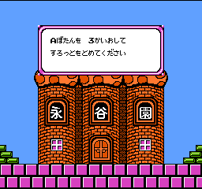
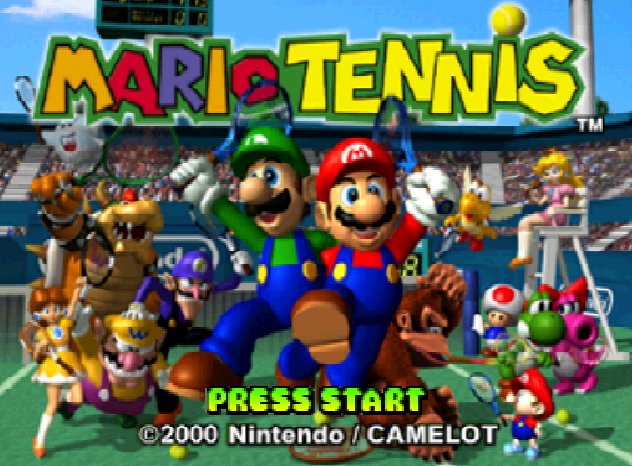

Here is a quick rundown on Mario games ported to more than one system. This is not the same as it being remade at a later time, these are games that would have come out together or close enough. How picky we are will make sense when I explain below. Some of these listed may surprise you! **NEW** Click for larger images, at least most of the time!
This will make sense later.
The original 1981 arcade game got ported over to many home consoles at the time, even before Nintendo's own systems. It was big deal to have arcade games at home (and it sure saved your quarters too). It's on Atari systems, Intellivision, Coleco, home computers and more, even a Game and Watch adaptation. These are not arcade perfect, however. The GBA e-reader also recreates these Donkey Kong games entirely on cards but based on the NES versions. Game and Watch systems also had their ‘unique interpretations of game play. On Virtual Console there are two versions of Donkey Kong, an arcade like recreations and the NES version. You can find interesting details on the differences and availability of it in the ports section of this page. Donkey Kong Jr, not to be confused with the Game and Watch game called 'Donkey Kong ii' is from 1982 and got a similar treatment, actually a launch game for NES in Japan. For some reason there are three versions of it on Game and Watch. Donkey Kong 3 did not get the same attention as others but Hudson did a very obscure and lost for some time remake "Donkey Kong 3: Dai Gyakushuu" or "The Great Counterattack" with some new environments and gameplay changes. Yes the image above is from this.
Never seen this poster before, have you?
Mario Bros in 1983 marks Luigi's birthday and the first time the Marios are plumbers dealing with pipes. While not wildly successful, it still got it's ports on current systems and some notable remakes with twists. "Punch Ball Mario Bros" from 1984 is a licensed Hudson Soft game where they add... punch balls to the mix that stun enemies. "Mario Bros. Special" a remake again by Hudson in the same year with some adjustments in level design and stages. This predates the more commonly known (but still relatively obscure) "Super Mario Bros Special" they did in 86. "Mario Clash" for Virtual Boy is Mario Bros but with an extra dimension that Mario has to use to defeat the Koopas, yes they change the shellcreepers to koopas here, modernizing it before the versions on the GBA games. Before that let's discuss "Kaettekita Mario Bros." or "Return of Mario Bros", a Famicom disk system game with physics altered to something a bit more forgiving and easier to control. It came out way in 1988, one of the last Mario titles on the system. Of course another modernized remake was also ported as a bonus game in the GBA’s Super Mario Advance games which are in themselves remakes and ports of older games. There is an e-reader card version, it notably calls the shellcreepers 'turtles' and Mario 3D World has a Luigi only remake as a bonus.
From Special on top and the slots of Kaettekia on bottom.
It's everyone's favorite illegitimate doctor (even Miyamoto-san wouldn't let him operate on him) in this puzzle game from 1990. You use your special pills to destroy viruses. This series is probably the most popular of the Mario puzzle games unlike some examples below. Anyway it's tons of fun with catchy music at that. Believe it or not, the games at the time got some criticism for not being accurate regarding medicine, I mean, you think? The Gameboy version is basic looking but it has an ending and the viruses are from space or something.

It's been re-released several times with a straight port to GBA in the NES Classics lineup. There's also various eShop renditions. A little outside our scope here but Dr. Mario 64 was a crossover with Wario Land 3. To note, Nurse Peach is an assistant here but according to one of the manga she's a different person than normal Peach. That would make sense actually because Dr. Mario might not be Mario, I mean, they only share a last name. (Ba dum tss) There is a Dr. Luigi too and a modern app but... we don't talk about that...
This 1991 game seems simple but really it's not... Actually it kind of is still but there are a few interesting details about this puzzle game. Here you stack up two of the same Mario enemy to clear them, supposedly inspired by Tetris. It has an identity crisis being known as "Mario and Yoshi" some Europe and Australia and "Yoshi's Egg" in Japan. Americans just got "Yoshi". There are two modes with minimal differences like the addition of an exciting timer! This game is by Game Freak and its well reception helped them to create Pokemon games according to Mariowiki.

From the manga

Covered here already, these games from 1992 and 1993 were on both the NES, SNES, and even computers as part of the educational Mario Discovery series. Check out the link for more details on these strange games.
This is a puzzle game from 1992 initially. Match the same types of cookies to clear a line. There are a bunch of rounds for single player and a two player mode. Puzzle mode is only in the SNES version where you are given limited moves to clear the stage. Find the manual here. It reappeared in Nintendo Puzzle Collection for GCN in 2003 but that doesn't count for here because it's a revamp.

Interesting notes of this game is that the SNES version which came out in 1993 has a more uptodate and less Super Mario World inspired take on Yoshi where he speaks 'yoshi' for example. There is a Super Famicom only sequel called 'Yoshi no Cookie: Kuruppon Oven de Cookie' and it's a rare game, given out as a contest prize to promote National's new Kuruppon Oven. There are only 500 copies but if you get one you'll get to enjoy a new mode where you learn how to make real life yoshi cookies. Talk about a tie-in that actually makes sense!
From 'Yoshi no Cookie: Kuruppon Oven de Cookie', a title screen few have ever seen.
Another puzzle game but you are Toad on the screen and you pick up the bombs and monsters to clear lines without trapping yourself. It's pretty fun.

The plot is simple but nice enough. Wario takes over the woodlands with monsters and Toad, who is described as a hero, tries to stop him. Birdo and 'Sprites' as they are called help Toad along the way. There are several game modes in both NES and SNES versions and lots of unusual characters. Worth checking out for sure.

menu screen
Kind of a weird example but they are ports of each other for this generation. Developed by Camelot in 1999 these are golf games where Mario and co. play on fields with zany elements on them. The game boy color versions kicked off the brief trend where it have you play as humans characters and level up RPG style. Very interesting. You can use the transfer pack to bring characters over from the GBC version you'd never other wise see in 3D (or at all elsewhere).There's an interesting post on them here.
We'll go with this version because it's pretty!
There's a bunch of modes in the N64 version from plain golf to ring shots and various skill modes. The main Mario cast is here, Mario, Luigi, Yoshi, Peach, Wario, Donkey Kong, Bowser, and some interesting additions like Baby Mario, the first time he'd be a baby clone inclusion and Metal Mario. This isn't mentioning the humans you can port over. I always thought it was sort of cool that they brought over OCs like that. These characters can have palette swaps too, unseen outside of Smash bros. In the gameboy version there are less playable characters and a different structure with a hub and it involves you winning tournaments against computer controlled characters to rank up. For a portable port it's surprisingly playable and was received as well as the console version.
Get out there! Get that score of -15
The millennium came and Camelot gave us something pretty sweet. Mario finally got his proper tennis game but not the first of course if we remember the Virtual Boy (as seen on this sites homepage image). Starting with the console version, like before there are lots of modes and solid gameplay with a nice roster even by today's standards. It also set precedents for games to come with the type attributes characters were given. Mario was balanced, Peach technique, Bowser power, Boo tricky, and etc.. Yes, Waluigi shows up a little different than some might remember. Daisy came along as a spin-off queen (sorry fans..) In gameplay you can do various shots by the appropriate button combos. It's not the deepest ever, in fact the most simple compared to later games that would introduce gimmick elements, that is not to say there is no strategy here.
Presented in authentic resolution.
There is a lot of content here and lots of courses even if the unlock requirements are a little annoying and/or involve linking up with the gameboy version. Modes include the tournaments, ring shots, piranha challenge, and a Bowser stage with items to use Mario Kart style, very fun. The GBA again has a RPG kind of thing.
Would he have made it in Smash sooner if he kept this energy?..
A series of sports games based on the Olympics. Oh, and Mario and Sonic are in them! The original was on Wii in 2007 and DS in 2008 based on Beijing 2008's games. Yes this series gets dated quick. There are pairs of games for the Vancouver 2010 Winter games, London 2012 games, and Rio 2016 games. Not all of these came in pairs, the 2014 Winter games was just Wii U and Tokyo 2020 for Switch.
How is this remotely fair? Mario and co. are probably on mushrooms but still..
This is basically a minigame party sport collection, technically called 'events' with the novelty of Mario and Sonic characters and it works. Like you'd expect in a game like this each character has their stats and whatnot. Olympic Winter Games added some Wii Balance Board stuff if you are into that and there was a Sonic only themed iOS app released Jan 30, 2010. It's now a lost game I believe. These games are considered official by the International Olympic Committee. I bet you didn't know this was serious business!

Remember all of these? No?
Mario Power Tennis and Donkey Kong Jungle Beat in 2009 for America. These don’t attempt to not be a port as evidenced by the box art. They add motion control to the games but change nothing else. Some might call it grasping for straws but the titles chosen do beg for some sort of motion based movement. Swinging a Wii remote is not however as cool as those DK bongos, sorry.
Anything Virtual Console, Super Mario All-Stars, the Super Mario Advance remakes, the Classic NES series on GBA, Nintendo eShop ports, e-Reader ports, Game&Watch ports, Nintendo Switch ports, and VS. System/ arcade ports: I will touch on a few of these anyway because there’s a lot to unpack there. These usually won’t be examples because they will either recreate the game or are released at a much later date, especially regarding Virtual Console games. This list would be a lot less exciting too since just so much has been made available digitally these days.
If you were there, you might have heard how this would 'kill emulation'. Did it?..
-Donkey Kong Land games: 1995’s Donkey Kong Land on Gameboy is not a port often mistaken according to the game. Their presentation is respectable, attempting to resemble the sixteen bit graphics on an eight bit monochrome display (there were Super Gameboy enhancements however), but corners had to be cut. In fact it’s referenced in the first game’s story where Cranky claims that kids only want ‘fancy graphics’.He even arranges for K. Rool to steal the banana hoard all over again for a sequel. Anyway for all three Land titles, while based on the original games the levels and worlds are remade along with a bunch of other changes. Donkey Kong Land iii actually had a Gameboy Color remake ‘Donkey Kong GB: Dinky Kong & Dixie Kong’ entirely in… color for Japan only.
-2000’s Donkey Kong Country on GBC and onward: Actually ports as opposed the Land series, keeping the same story for but adding extended and exclusive levels plus minigames. The GBA trilogy of DKC titles are enhanced remakes. There are welcome features such as improved saving system, extra activities, new modes, and more. Unfortunately they suffer from an issue that the Super Mario World GBA port (see my coverage here) struggled with, inferior sound and picture from the console version. This is not an example only because of the time difference with releases.
-Donkey Kong Country Returns: Wii, 3DS: The Wii game is from 2010, a 2.5D platform game and is part of the Donkey Kong Country series. In 2013 the 3DS got an enhanced remake. Their exclusion from the main list is the time between releases and the fact that one kind of replaces the other.
All-star line up, if I do say so myself
-Super Mario Advance (series): Games on the GBA remaking SMB2, SMB3, SMW, and Yoshi's Island. While the first three had been done before with Mario All-Stars, Yoshi's Island was a more fresh take.
-Nintendo Switch and 3DS Ports: I remember back when this happened there was a little controversy in some circles as we were getting remakes for the Switch instead of new games. Some of these are Donkey Kong Country: Tropical Freeze, Captain Toad: Treasure Tracker, New Super Mario Bros U Deluxe, Mario Kart 8 Deluxe, Mario Maker, (Poochy) & Yoshi's Woolly World, and Minecraft. Minecraft is a partial example because 3DS got it’s port and the game was on just about every other system. I'm not counting these because for the Switch these ports were to replace the versions of the games on the 'dying' WiiU system rather than be a side by side release. The 3DS games were borderline, as the portable ports couldn't perfectly replicate the console version and were adaptations more than straight ports -but- they have a time difference of months to years from the first release. Not entirely the spirit I'm going for with this list. My thoughts might change over time of course.
-Mario & Luigi RPG remakes: This includes Superstar Saga + Bowser's Minions and Bowser's Inside Story + Bowser Jr.'s journey. These are remakes of the GBA/DS games completely with updated visuals and of course as advertised new modes and adventures. Whether the changes in the games are good or bad is subjective but I will say that the effort to add new content as opposed to a straight rip of an older game to a newer system is neat.
-Super Mario RPG and Paper Mario: The Thousand Year Door remakes: Same story per above. I mean.. they are decades later so that's not exactly a simultaneous release.. Great games tho!